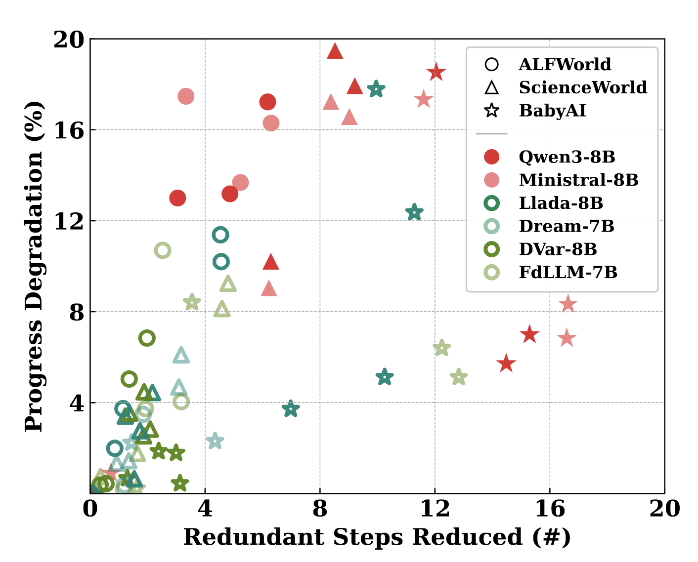

DiffuAgent
The Bitter Lesson of Diffusion Language Models for Agentic Workflows:
A Comprehensive Reality Check
1Southeast University, China 2Alibaba 3Nanyang Technological University, Singapore

- In Embodied settings, dLLMs suffer repeated attempts (retry loops), failing to branch under temporal feedback.
- In Tool-Calling settings, dLLMs fail to maintain symbolic precision (e.g., strict JSON schemas) under diffusion noise.
TL; DR
- Efficiency ≠ Agentic Effectiveness. Despite low latency, diffusion-based LLMs (dLLMs) fail to serve as reliable agent backbones in both long-horizon embodied tasks and precision-critical tool-calling scenarios.
- Systematic Agentic Failures. dLLMs exhibit characteristic failure modes, including retry loops under temporal feedback and loss of symbolic precision (e.g., malformed JSON) under diffusion noise.
- DiffuAgent Framework. We introduce DiffuAgent, a unified and modular framework for evaluating dLLMs across embodied and tool-calling agentic workflows.
- Where dLLMs Work. dLLMs remain effective in non-causal auxiliary roles (e.g., memory summarization and tool selection), but require causal and logically grounded mechanisms to function as full agent backbones.
Failure of dLLMs as Agent Backbones

We compare dLLMs and autoregressive LLMs on embodied (AgentBoard) and tool-calling (BFCL) benchmarks. The results show that dLLMs lag behind on both success/progress and tool-calling accuracy.
Systematic Failure Modes of dLLMs

(a) Failure of Replan for embodied agents: dLLMs exhibit significantly more frequent retry loops than LLMs.
(b) Failure of Precision for tool-calling agents: dLLMs are more prone to produce malformed JSON schemas.
(c) Performance-Efficiency Trade-offs: despite higher inference efficiency, dLLMs do not guarantee comparable agentic performance to autoregressive LLMs.
DiffuAgent: Framework on Analyzing Agentic Behaviors in dLLMs

To better understand the agentic potential of dLLMs, we introduce DiffuAgent, a novel evaluation framework that treats dLLMs as plug-and-play cognitive modules for augmenting LLM agents.
- For embodied agents, we introduce a memory-augmented module for history compression and an early-exit verifier for global trajectory checking.
- For tool-calling agents, we include a tool selector over the library of available tools, and a JSON format editor.
Analysis of Agentic Behaviors in dLLMs

• dLLMs are competitive memory modules for memory-augmented agents.
• LLM Verifiers tend to trigger premature early exits, whereas dLLMs terminate more reliably.

• dLLMs are effective tool selectors but struggle as tool-call editors.
Citation
@article{lu2026diffuagent,
title = {The Bitter Lesson of Diffusion Language Models for Agentic Workflows: A Comprehensive Reality Check},
author = {Lu, Qingyu and Ding, Liang and Liu, Xuebo and Zhang, Kanjian and Zhang, Jinxia and Tao, Dacheng},
journal = {arXiv preprint},
year = {2026}
}